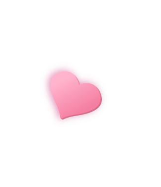
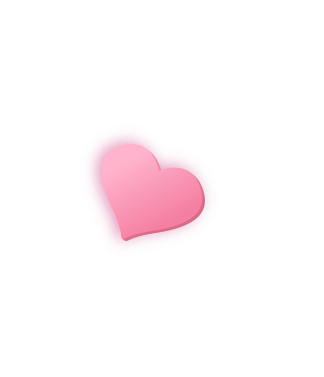

Sobre él
En este espacio quería poner una descripción de ti, muy detallada por cierto, pero mejor después la llenamos juntos. En la sección de abajo agrego algunas cosas que sé de ti, no todo, pero si lo importante ¡Quiero conocerte más p mascota!
Saber másSobre ella
Tengo muchas aficciones como libros o habilidades por desarrollar. Creo que en la relación soy la persona más difícil con quien lidiar. Lastimosamente hago mucho berrinche a mi enamorado y el ya va a explotar en cualquier momento pipipip.
Saber más
 
